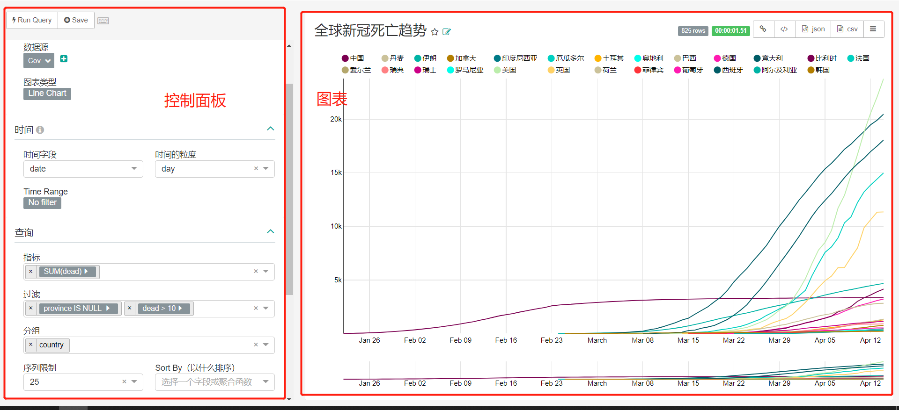
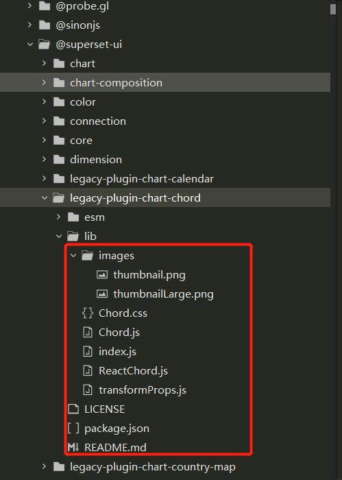
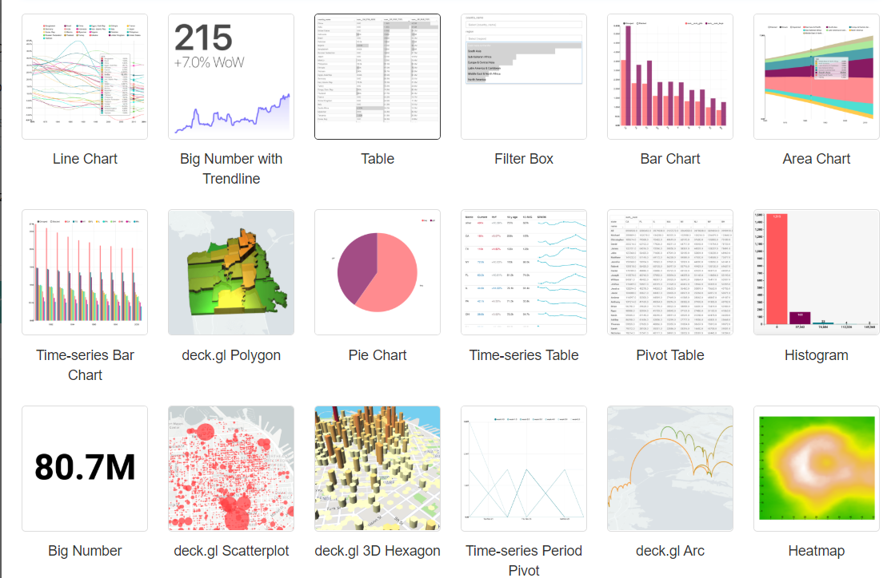
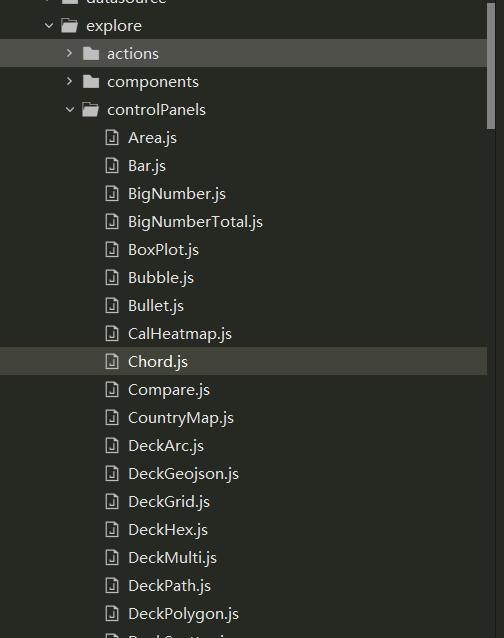
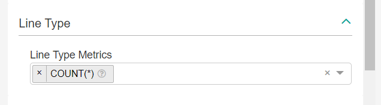
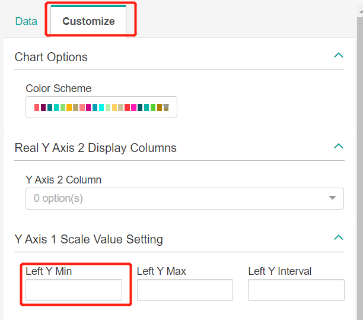

# 概述
supsert 是一个轻量的 BI 平台，是一个后端使用 flask，前端使用 react 的前后端分离项目，它内置的数种常用的图表。至 0.33 版本后，superset 团队把图表改成了组件 - 注册的的开发方式，并把原来所集成的图表都改成一个个组件，这些图表组件组成了一个包：@superset-ui。如果我们
想自定义一个图表，基本思路也是把图表封装成组件，注册到 superset 配置文件上，后台增加相应处理类。本文基于 superset0.35 版本，0.36 的版本除了文件位置改变了，其他是一样的。本文只介绍应用层面上的图表呈现逻辑，不解析核心的渲染逻辑，看完本文你会知道定义一个图表类型的流程
# Superset 图表组成
Supsert 图表一共由三个部分组成：控制面板和图表还有后台处理类

- 控制面板：控制面板固定的有数据源 & 图表类型和时间这两个属性，其他的都是可以自定义的
- 图表：图表完全就是自定义的
- 后台处理类：图表的处理类都写在了 /superset/viz.py 里，下文介绍该类
无论图表还是控制面板，都是必须注册到 superset 注册文件才能使用
# 图表
首先了解一下图表的结构，打开 @superset-ui 这包下的一个图表文件夹，如 supsert/assets/node_modules/@superset-ui/legacy-plugin-chart-chord

这是个典型的 superset 图表包，一般由这几个文件组成，下面逐一介绍
# images 文件夹
images 是存放图表缩略图的地方，由 thumbnail.png 和 thumbnailLarge.png 文件组成，注意文件名不可改。thumbnail.png 为普通分辨率的图片，thumbnailLarge.png 为大分辨率的图片
下图为图表的缩略图

# index.js
index 为整个图表的入口文件，主要作用是返回一个图表类，这个类后面会被注册到 Superset 的注册文件中
index 示例代码
import { t } from '@superset-ui/translation'; | |
import { ChartMetadata, ChartPlugin } from '@superset-ui/chart'; | |
import transformProps from './transformProps'; | |
import thumbnail from './images/thumbnail.png'; | |
const metadata = new ChartMetadata({ | |
name: t('Echart Pie'), | |
description: '', | |
credits: ['http://echarts.baidu.com/examples/editor.html?c=scatter-effect'], | |
thumbnail, | |
}); | |
export default class TimeSeriesScatterChartPlugin extends ChartPlugin { | |
constructor() { | |
super({ | |
metadata, | |
transformProps, | |
loadChart: () => import('./ReactEchartsPie.js'), | |
}); | |
} | |
} |
ChartPlugin 是 superset 定义好的图表基类，他只拥有控制面板，并且有两个属性数据源 & 图表类型和时间。
ChartPlugin 的构造函数有三个：
- metadata：图表元数据，定义的图表名，描述等元信息
- transformProps：数据装载器
- loadChart：一个渲染图的函数
# transformProps.js
transformProps 作为前后端的接受转换器，将后端传来的数据转换为 react 的数据
transformProps 示例代码
export default function transformProps(chartProps) { | |
const {width, height, queryData, formData} = chartProps; | |
//formData 前端页面的数据 | |
//queryData 后端返回的数据 | |
return { | |
data: queryData.data, | |
width, | |
height, | |
formData, | |
legend: queryData.data.legend, | |
series: queryData.data.data, | |
}; | |
} |
transformProps 主要接受这四个参数
const {width, height, queryData, formData} = chartProps; |
- width：这个是前端的参数不需要处理
- height：这个是前端的参数不需要处理
- formData：formData 为控制面板传过来的数据
- queryData：是 superset 后台传过来的数据
我们处理一下返回组装好的数据，方便后面调用
return { | |
data: queryData.data, | |
width, | |
height, | |
formData, | |
legend: queryData.data.legend, | |
series: queryData.data.data, | |
}; |
# ReactChord.js
这个文件主要是讲我们写的渲染方法转换为 Raect 组件
transformProps 示例代码
import { reactify } from '@superset-ui/chart'; | |
import Component from './Chord'; | |
export default reactify(Component); |
只要把 Component 换成我们自定义渲染的函数就可以了，改动最少
# Chord.js
这个文件只要返回一个渲染方法的函数就可以了
比如
import d3 from 'd3'; | |
import PropTypes from 'prop-types'; | |
import { CategoricalColorNamespace } from '@superset-ui/color'; | |
import { getNumberFormatter } from '@superset-ui/number-format'; | |
import './EchartsBar.css'; | |
import echarts from 'echarts'; | |
const propTypes = { | |
data: PropTypes.array, | |
width: PropTypes.number, | |
height: PropTypes.number, | |
}; | |
function EchartsBar(element, props) { | |
const { data, width, height } = props; | |
element.innerHTML = ''; | |
var echars_xAxis = [] | |
var echars_series = [] | |
data.data.forEach((val, idx, array) => { | |
var index = echars_xAxis.indexOf(val[4]); | |
if (index == -1) { | |
echars_xAxis.push(val[4]); | |
echars_series.push(1); | |
}else{ | |
echars_series[index] += 1; | |
} | |
}) | |
console.log(data); | |
const div = d3.select(element, props); | |
var html = '<div id="myChart" style="height:' + height + 'px; width:' + width + 'px;"></div>'; | |
div.html(html); // 给 echarts 添加 div | |
var myChart = echarts.init(document.getElementById('myChart')); // 初始化 echarts | |
var option = { | |
tooltip: { | |
trigger: 'axis', | |
axisPointer: { | |
type: 'cross', | |
crossStyle: { | |
color: '#999' | |
} | |
} | |
}, | |
toolbox: { | |
feature: { | |
dataView: {show: true, readOnly: false}, | |
magicType: {show: true, type: ['line', 'bar']}, | |
restore: {show: true}, | |
saveAsImage: {show: true} | |
} | |
}, | |
legend: { | |
data: ['蒸发量', '降水量', '平均温度'] | |
}, | |
xAxis: [ | |
{ | |
type: 'category', | |
data: ['1月', '2月', '3月', '4月', '5月', '6月', '7月', '8月', '9月', '10月', '11月', '12月'], | |
axisPointer: { | |
type: 'shadow' | |
} | |
} | |
], | |
yAxis: [ | |
{ | |
type: 'value', | |
name: '水量', | |
min: 0, | |
max: 250, | |
interval: 50, | |
axisLabel: { | |
formatter: '{value} ml' | |
} | |
}, | |
{ | |
type: 'value', | |
name: '温度', | |
min: 0, | |
max: 25, | |
interval: 5, | |
axisLabel: { | |
formatter: '{value} °C' | |
} | |
} | |
], | |
series: [ | |
{ | |
name: '蒸发量', | |
type: 'bar', | |
data: [2.0, 4.9, 7.0, 23.2, 25.6, 76.7, 135.6, 162.2, 32.6, 20.0, 6.4, 3.3] | |
}, | |
{ | |
name: '降水量', | |
type: 'bar', | |
data: [2.6, 5.9, 9.0, 26.4, 28.7, 70.7, 175.6, 182.2, 48.7, 18.8, 6.0, 2.3] | |
}, | |
{ | |
name: '平均温度', | |
type: 'line', | |
yAxisIndex: 1, | |
data: [2.0, 2.2, 3.3, 4.5, 6.3, 10.2, 20.3, 23.4, 23.0, 16.5, 12.0, 6.2] | |
} | |
] | |
}; | |
myChart.setOption(option); | |
} | |
EchartsBar.displayName = 'Echarts Bar'; | |
EchartsBar.propTypes = propTypes; | |
export default EchartsBar; |
这是一段渲染 echarts 的代码，propTypes 为检查后端传过来的数据类型，EchartsBar 函数为渲染图的函数，只要修改这个函数就可以了
# 图表注册
上面已经完成了图的开发了，我们必须注册到 superset 才能使用。
1. 修改 /visualizations/presets/MainPreset.js
// 开头导入 | |
import ChordChartPlugin from '@superset-ui/legacy-plugin-chart-chord'; | |
// 注册 | |
plugins: [ | |
new ChordChartPlugin().configure({ key: 'chord' }), | |
] |
2. 修改 /explore/components/controls/VizTypeControl.jsx
这个文件是渲染选择图表的文件，加上图表后才能在选择图表里看见，这里的字符串对应注册时候的 key
// 找到 DEFAULT_ORDER 这个变量 | |
const DEFAULT_ORDER = [ | |
'line', 'big_number', 'table', 'filter_box', 'dist_bar', 'area', 'bar', | |
'deck_polygon', 'pie', 'time_table', 'pivot_table', 'histogram', | |
'big_number_total', 'deck_scatter', 'deck_hex', 'time_pivot', 'deck_arc', | |
'heatmap', 'deck_grid', 'dual_line', 'deck_screengrid', 'line_multi', | |
'treemap', 'box_plot', 'separator', 'sunburst', 'sankey', 'word_cloud', | |
'mapbox', 'kepler', 'cal_heatmap', 'rose', 'bubble', 'deck_geojson', | |
'horizon', 'markup', 'deck_multi', 'compare', 'partition', 'event_flow', | |
'deck_path', 'directed_force', 'world_map', 'paired_ttest', 'para', | |
'iframe', 'country_map','echarts_pie' | |
]; |
# 控制面板
# 主文件
控制的类全放在了 /explore/controlPanels/ 里

chord 图表控制面板示例
import { t } from '@superset-ui/translation'; | |
import { nonEmpty } from '../validators'; | |
export default { | |
controlPanelSections: [ | |
{ | |
label: t('Query'), | |
expanded: true, | |
controlSetRows: [ | |
['groupby'], | |
['columns'], | |
['metric'], | |
['adhoc_filters'], | |
['row_limit'], | |
], | |
}, | |
{ | |
label: t('Chart Options'), | |
expanded: true, | |
controlSetRows: [ | |
['y_axis_format', null], | |
['color_scheme', 'label_colors'], | |
], | |
}, | |
], | |
controlOverrides: { | |
y_axis_format: { | |
label: t('Number format'), | |
description: t('Choose a number format'), | |
}, | |
groupby: { | |
label: t('Source'), | |
multi: false, | |
validators: [nonEmpty], | |
description: t('Choose a source'), | |
}, | |
columns: { | |
label: t('Target'), | |
multi: false, | |
validators: [nonEmpty], | |
description: t('Choose a target'), | |
}, | |
}, | |
}; |
控制面板的 js 文件主要是要返回一个 json， controlPanelSections 定义定义了控制面板的选项， controlOverrides 为重写控制面板的属性
controlSetRows 下是多个列表，每个列表为一行，里面的字符串定义在 /explore/controls.jsx。渲染的时候会从 controlSetRows 取列表，然后从 /explore/controls.jsx 寻找配置，再渲染到面板
# controls.jsx
controls.jsx 写的面板控制的配置项，有按钮，文本输入框，单选多选等等
某个配置项示例：
test: { | |
...metrics, // 继承 | |
multi: true, // 多选 | |
clearable: true, // 是否可调用， true 当作 sql | |
validators: [], // 是否可以为空 | |
label: t('Line Type Metrics'), | |
description: t('Metrics for which line type are to be displayed'), | |
}, | |
test1: { | |
type: 'TextControl', // 文本输入 | |
label: t('Left Y Min'), | |
renderTrigger: true, | |
isInt: true, | |
description: t('Left Y Min'), | |
}, |
这是个指标配置项：
...metrics 表示继承 metrics，multi 为是否可以多选， validators 是否可以为空，default 默认值，label 选项标题，description 选项描述，renderTrigger 是否显示在 Customize 标签页
test 的效果：

test1 的效果：

# 注册面板
开发完的面板如果不注册到 Supserset，一样不会被使用
修改 /setup/setupPlugins.ts
// 导入 | |
import Chord from '../explore/controlPanels/Chord'; | |
// 注册 | |
.registerValue('chord', Chord) |
# 后台
图表处理的函数全部写在了 /superset/viz.py 里面
1. 如果你使用了自定义面板选项，而且这个选项是 SQL 语句的一部分，你必须在下面变量上加上自定义的选项名，否则 self.form_data.get ('echarts_pie_metrics') 将获取不到数据
# METRIC_KEYS | |
METRIC_KEYS = [ | |
"metric", | |
"metrics", | |
"percent_metrics", | |
"metric_2", | |
"secondary_metric", | |
"x", | |
"y", | |
"size", | |
"echarts_pie_metrics" | |
] |
2. 新增图表处理类
示例：
class EchartsPieViz(NVD3Viz): | |
""" echarts pie """ | |
viz_type = "echarts_pie" | |
verbose_name = _("Echarts Pie") | |
# 是否排序 | |
sort_series = False | |
# 是否对 time 做处理 _timestamp | |
is_timeseries = False | |
def query_obj(self): | |
# check bar column, line column 是否重复 | |
bar_metrics = self.form_data.get('echarts_pie_metrics') | |
if not bar_metrics : | |
raise Exception(_("Please choose metrics on line or bar type")) | |
bar_metrics = [] if not bar_metrics else bar_metrics | |
d = super().query_obj() | |
if len(d["groupby"]) >1: | |
raise Exception(_("groupby has to be one")) | |
return d | |
def to_series(self, df, classed=""): | |
""" | |
拼接 前端渲染需要的数据 | |
:param df: | |
:param classed: | |
:return: {'legend':[], 'bar':[], 'line':[]} | |
""" | |
cols = [] | |
for col in df.columns: | |
if col == "": | |
cols.append("N/A") | |
elif col is None: | |
cols.append("NULL") | |
else: | |
cols.append(col) | |
df.columns = cols | |
metrics = self.all_metrics | |
legend, data = [], [] | |
series = df.to_dict("series") | |
for mt in metrics: | |
m_label = utils.get_metric_name(mt) | |
ys = list(series[m_label].items()) | |
for y in ys: | |
info = {"name": y[0],"value": y[1]} | |
data.append(info) | |
legend.append(y[0]) | |
chart_data = { | |
'legend': legend, | |
'data': data, | |
} | |
return chart_data | |
def get_data(self, df: pd.DataFrame): | |
# 后端返回的数据 | |
df = df.pivot_table(index=self.groupby, values=self.metric_labels) | |
chart_data = self.to_series(df) | |
return chart_data |
我们的图表必须继承 superset 提供的图表抽象类，superset 提供了几个图表的抽象类，示例里使用的是 NVD3Viz，下面介绍下属性和方法
属性：
- viz_type：图表类型，对应前端注册是 Key 值，必填
- verbose_name：暂不知道，选填
- sort_series：是否排序，选填
- is_timeseries：是否对 time 做处理 _timestamp，选填
方法： - query_obj：首先执行的这个方法，当我们刚进入图表或者点击查询的时候会执行这个方法，这个方法主要是对查询语句进行一些判断
self.form_data.get('echarts_pie_metrics') |
这个方法是获取自定义的控制面板选项的值
d = super().query_obj() | |
return d |
返回 d 后 superset 便开始执行查询了
- get_data：当查询完后，便会进入到这个函数，这个函数获取 superset 查询后返回来的数据然后进行处理，然后把数据传给前端的 transformProps，然后前端执行渲染，图表就渲染出来了